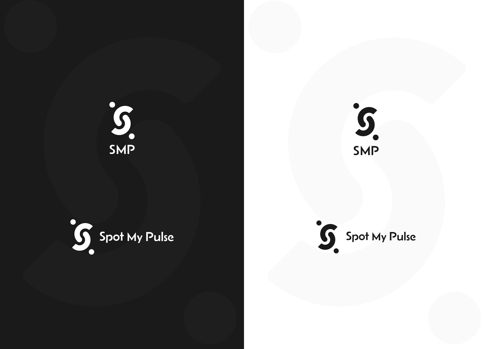

Processus de conception
Après avoir défini une charte graphique cohérente avec les valeurs et l’identité de Spot My Pulse, j’ai pu engager la phase de conception fonctionnelle. La première étape a consisté à élaborer des wireframes permettant de structurer les contenus, d’organiser les parcours et de poser les bases d’un userflow clair ainsi qu’une architecture de site intuitive.


